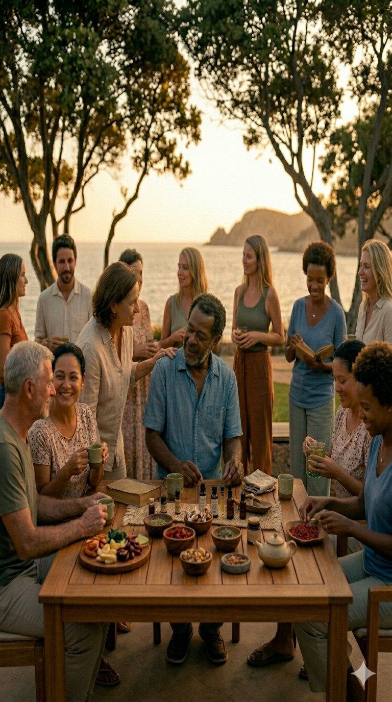

Você chegou até aqui porque alguma coisa fez sentido.
Talvez prosperar nunca tenha sido uma jornada individual.
Você já consome todos os meses.
A diferença é que isso quase nunca foi organizado de forma inteligente.
Toda vez que você consome… alguém ganha.
A pergunta é:
quanto disso poderia voltar para você e para as pessoas ao seu redor?
Consumo organizado. Construção consistente. Pessoas reais.
Você pode continuar consumindo como sempre…
Ou transformar isso em algo mais inteligente, coletivo e sustentável.
Uma estrutura de consumo baseada em produtos reais e recorrentes.

Tudo começa com algo simples:
pessoas que acreditam nas mesmas coisas.
Uma comunidade consistente tende a construir resultados mais consistentes.
Quando pessoas caminham juntas,
a consistência costuma durar mais.
E comunidades consistentes tendem
a construir resultados mais consistentes.
Talvez prosperar nunca tenha sido
uma jornada individual.
Se isso fez sentido para você,
o próximo passo é conhecer
a comunidade C3.